功率放大器的效率分析
本文介绍了不同导通角下功率放大器的最大效率和回退效率的理论计算和Matlab仿真。
最大效率分析
定义导通角为
于是，电流波形为
有
即
联立可得
对其进行傅里叶变化，得到直流分量
以及n阶分量
可以绘图为
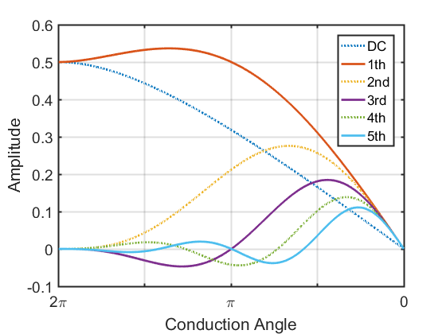
二次谐波是最主要的谐波分量，且同相叠加。其中，由于负载为在谐波上短路，电压波形的一次谐波摆幅正好为最大值$V_{dc}$，因而一次谐波功率为
直流功率为
借助于此，可以计算效率为
其曲线为
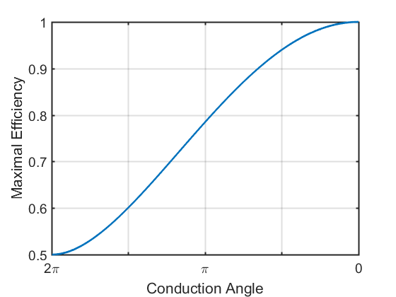
不同导通角下电流摆幅要求
假设$g_m$恒定，可以得到相比于A类放大器的额外驱动要求
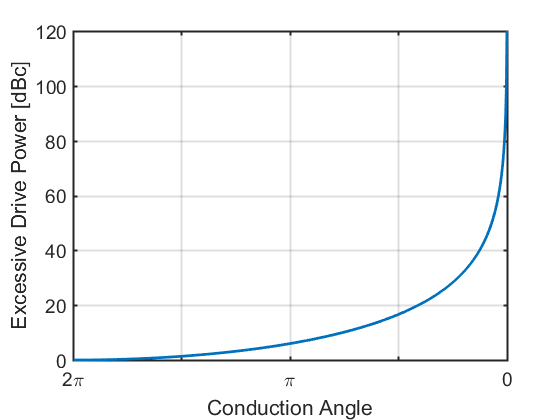
可以看出，B类功放相比于A类需要6 dB更多的输入驱动功率。
回退效率分析
假设回退时负载阻抗不变，为饱和时最佳值
因而回退效率为
假设回退后$I_{pk,b}=kI_{pk}$，在
亦即
可以得到新的导通角
和新的电流波形为
即
否则，在$\alpha\le\pi \mathrm{and} I_q+I_{pk,b}<0$时完全不导通，在$\alpha>\pi \mathrm{and} Iq-I_{pk,b}>0$时完全导通。
可得直流分量
和一次谐波分量
于是可以计算出回退效率，如下
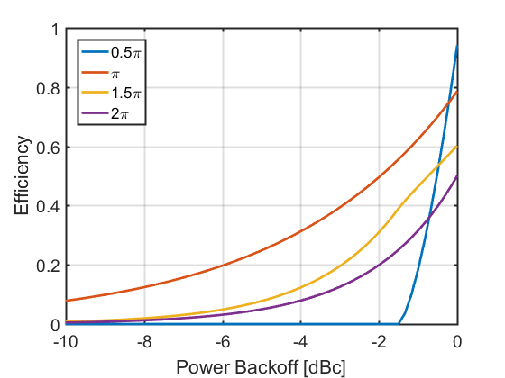
也可以绘制出输入回退时，输出功率图
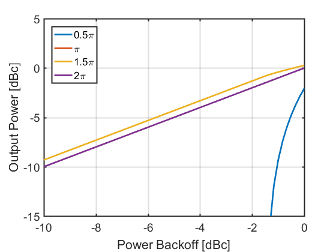
其中A类和B类完全重合，十分线性。
附录
导通角和谐波分量关系图的绘图代码
1 | Idc = @(x) 1/2/pi * (2*sin(x/2)-x.*cos(x/2))./(1-cos(x/2)); |
计算回退效率的代码
1 | # file PBO.m |
二次谐波对波形的影响
| $a_1\cos\theta+a_2\cos 2\theta$ | $a_1\cos\theta+a_2\sin 2\theta$ |
|---|---|
| 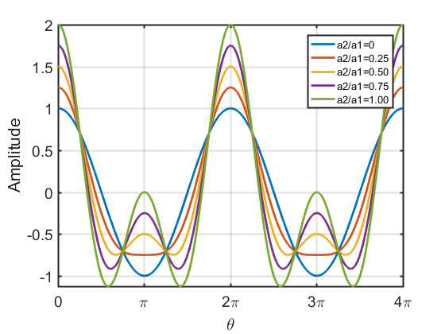 | 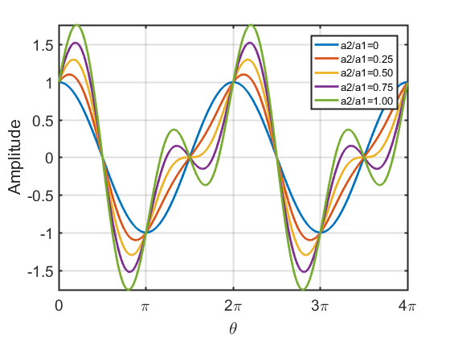 |
| $a_1\cos\theta-a_2\cos 2\theta$ | $a_1\cos\theta-a_2\sin 2\theta$ |
| 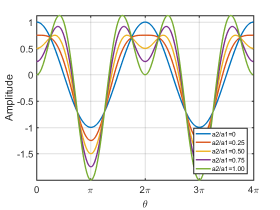 | 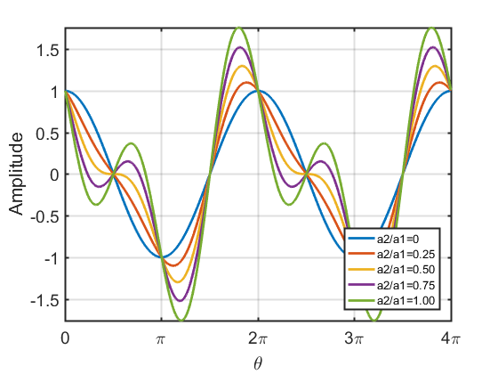 |
三次谐波对波形的影响
| $a_1\cos\theta+a_3\cos 3\theta$ | $a_1\cos\theta+a_3\sin 3\theta$ |
|---|---|
| 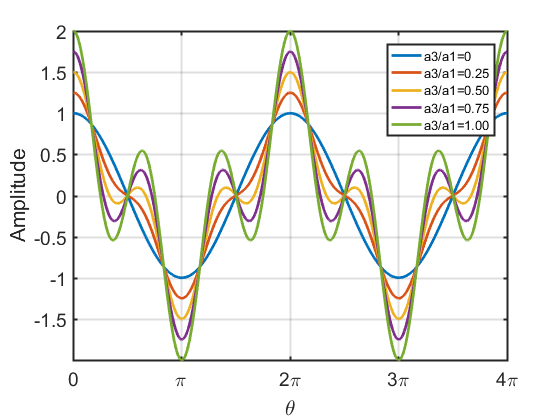 | 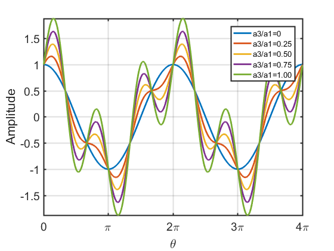 |
| $a_1\cos\theta-a_3\cos 3\theta$ | $a_1\cos\theta-a_3\sin 3\theta$ |
| 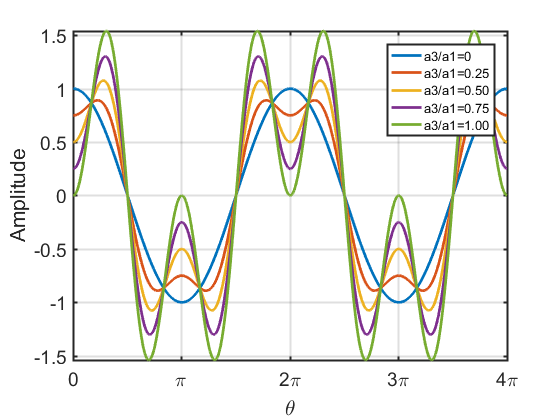 | 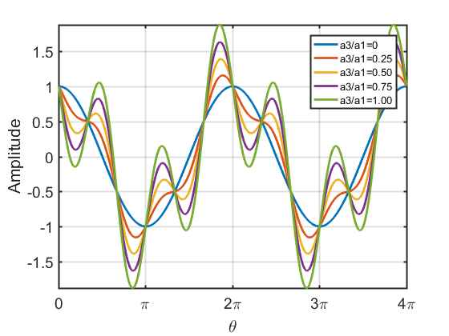 |
参考
- S. C. Cripps, RF Power Amplifiers for Wireless Communications, Second Edition.
Related Posts
- Post link: https://triblemany.github.io/archives/5544ed83/pa-backoff-efficiency-analysis.html
- Copyright Notice: All articles in this blog are licensed under BY-NC-SA unless stating additionally.